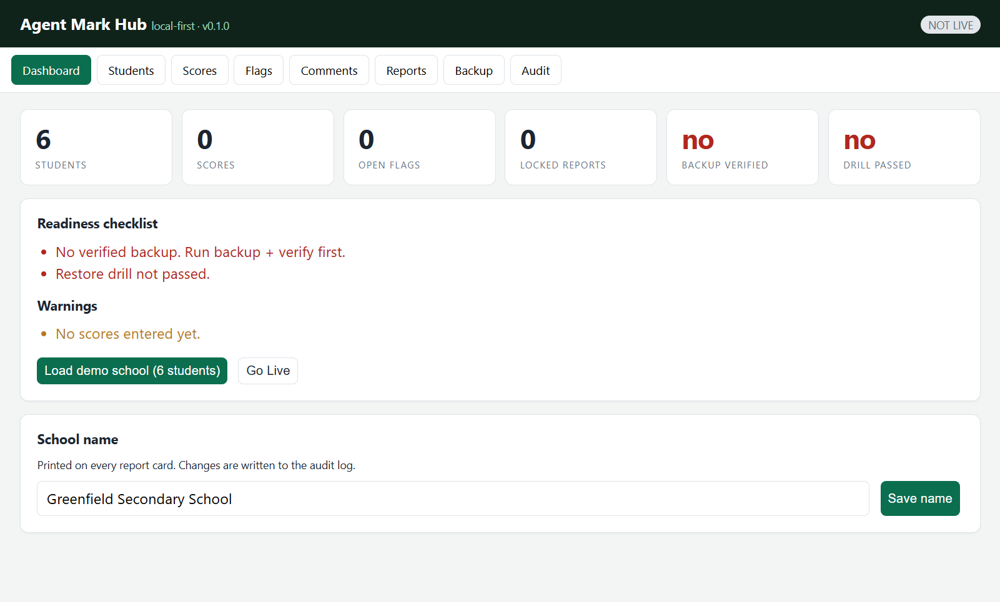

Install Agent Mark
The per-user installer runs under your own Windows account — no administrator password, no server, no account sign-up. A per-machine MSI is available for managed fleets. This page also covers the first ten minutes, uninstalling, and a factory reset.
1. Download and run
- On the download page, choose Download installer (5.79 MB).
- Open
Agent-Mark-Hub-0.1.0-x64-setup.exefrom your Downloads folder. - Windows SmartScreen may say “Windows protected your PC” because this pilot build is not code-signed yet. Choose More info → Run anyway. If your school blocks unsigned installers, use the portable ZIP instead.
- The installer copies the app to
%LOCALAPPDATA%\Agent Mark Huband adds a Start-menu entry. It finishes in a few seconds.
Managed install (IT)
For a whole lab or school fleet, use the MSI on the download page. It installs for all users under C:\Program Files\Agent Mark Hub and needs administrator rights. Silent install:
The MSI is per-machine, so it is suitable for Group Policy, Intune or SCCM. The .exe installer above remains the no-admin option for a single teacher's PC.
2. First launch
Open Agent Mark Hub from the Start menu. The window opens on the Dashboard. On first run the app creates its database and a signing key:
You should see four zeroed counters, a readiness checklist with two blockers (no verified backup, no drill), and a Load demo school (6 students) button.

3. The first ten minutes
- Dashboard → Load demo school. Six synthetic students appear.
- Scores. Enter
26-JSS2A-001,MATHS / CA1, value17. Then try99— it is refused withVAL-RANGE-01. Enter the same score again with a different value — refused withVAL-DUP-01. - Flags. The inbox lists missing-score flags. Resolve one; confirming requires a reason.
- Reports. Draft all complete students, then Teacher ✓ → Head ✓ → Lock + Sign. Open the print sheet: approved cards carry the signature block, unapproved ones a red DRAFT banner.
- Backup. Run Backup now, then Run restore drill. Only then does Go Live unlock.
- Audit. Every action above is in the log, each row hashing the previous one.
4. Uninstall
Use Settings → Apps → Agent Mark Hub → Uninstall, or run %LOCALAPPDATA%\Agent Mark Hub\uninstall.exe. This removes the program and shortcuts.
Your data is intentionally left behind so an uninstall cannot destroy a term's records. To remove it as well, delete:
That folder is also the factory reset: close the app, delete it, and the next launch starts empty with a new signing key.
5. Troubleshooting
The window never appears
Almost always a missing WebView2 runtime. Install Microsoft Edge WebView2 Runtime from Microsoft, or re-run the installer (it bundles the bootstrapper). The portable build also needs WebView2Loader.dll next to the .exe.
“Windows protected your PC”
Expected for an unsigned pilot build. More info → Run anyway. A signed installer is planned; until then, verify the SHA-256 on the download page so you know the file is the one we published.
Antivirus quarantines the installer
Unsigned installers (NSIS and MSI) occasionally trip heuristics. Ask IT to allow the file, or use the portable ZIP in a folder they trust. All files are published with hashes.
“It says the database is locked”
Two copies are running. Close both from Task Manager, then start one. The app is designed for a single user on one PC.
Where are my backups?
In %APPDATA%\org.agentmark.hub\agent-mark-hub\backups\. They are encrypted; copying them somewhere else is safe but useless without the key stored in the same database. The verification script can confirm a backup contains no readable student data.
6. Install the mobile app
The mobile app is a progressive web app: it installs from the browser, works offline, and needs no store account.
- Android (Chrome): open the mobile app, tap the menu, choose Install app (or Add to Home screen).
- iPhone/iPad (Safari): open the same link, tap Share, then Add to Home Screen.
- Open it once while online so the app shell is cached; after that it starts offline.
The phone app is a companion preview, not the hub: it stores its data on the phone and does not read the school PC's database. Keep the authoritative records on the PC.
Need the command-line build, the test scripts, or the architecture decisions? The project ships README.md, docs/PHASE_9_REPORT.md and the ADR set alongside the source.